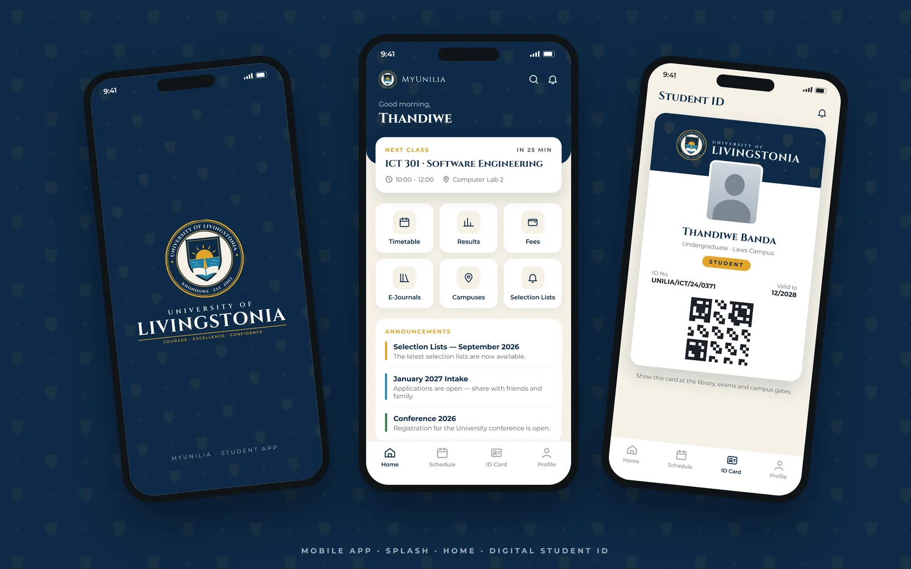
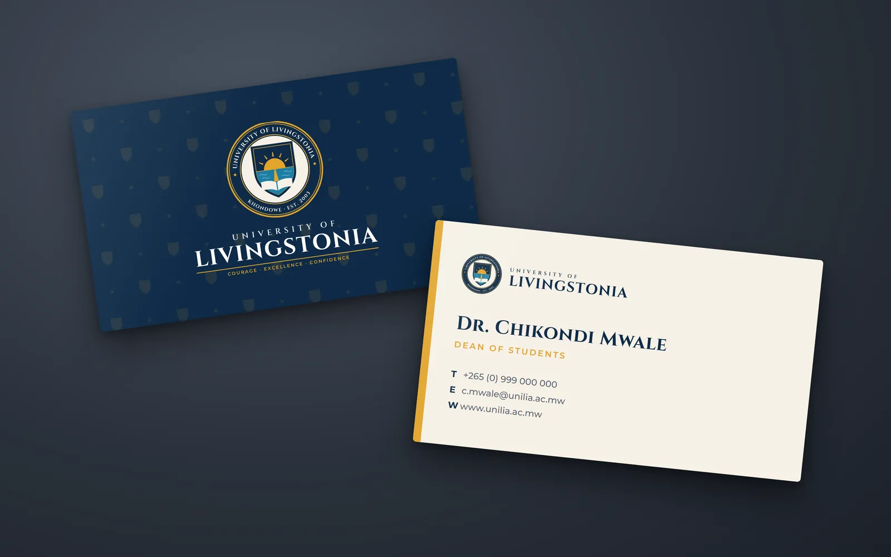
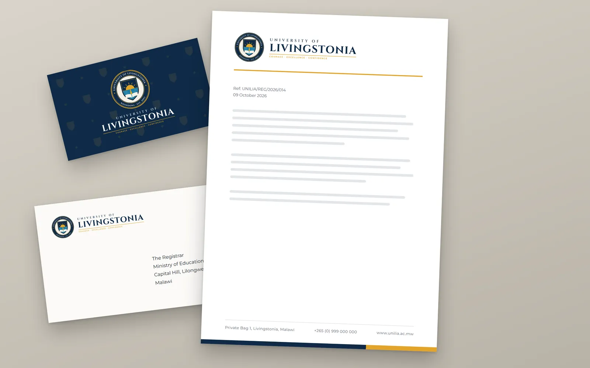
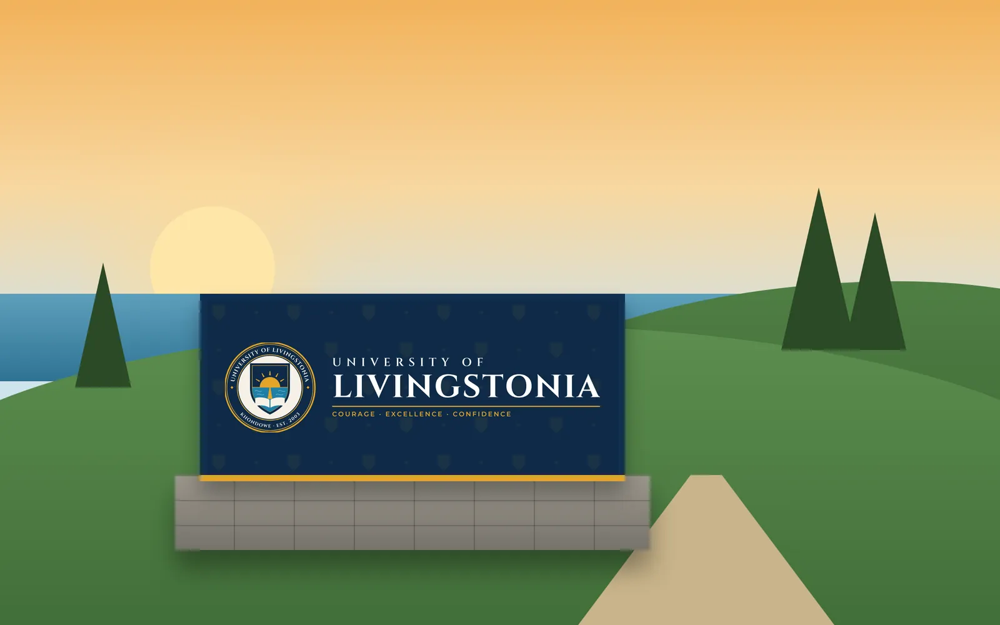
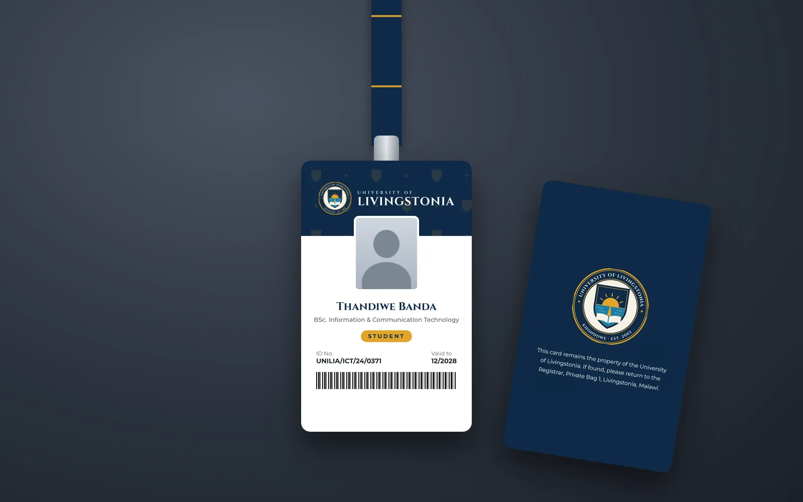
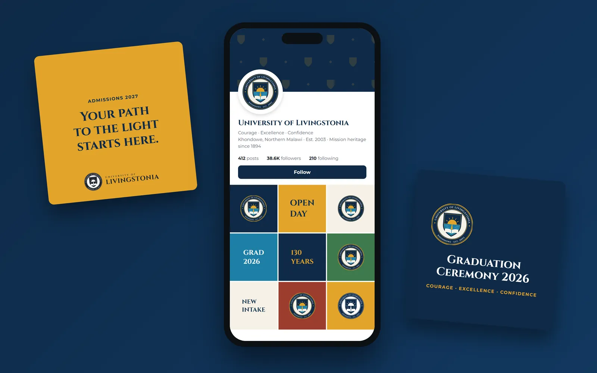
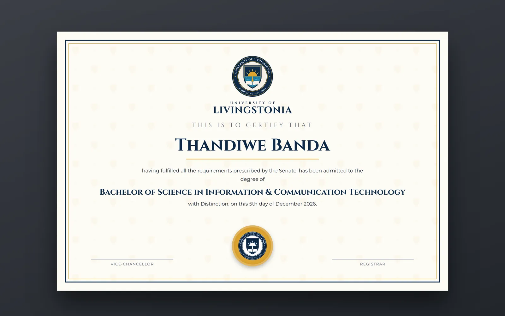
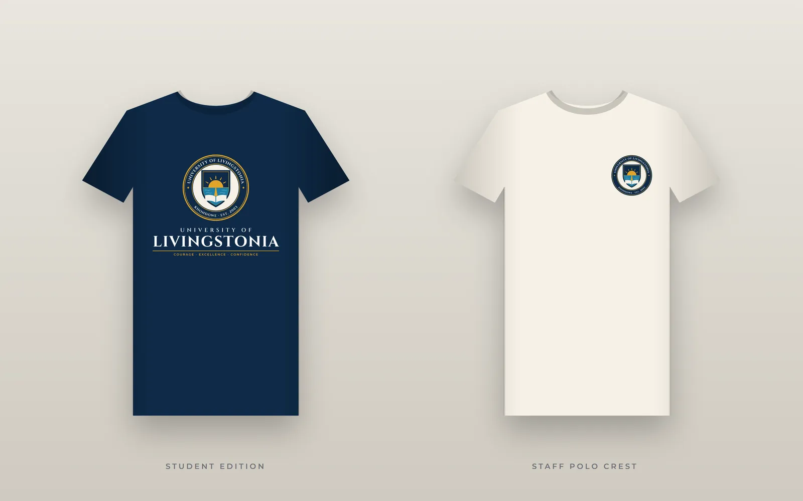
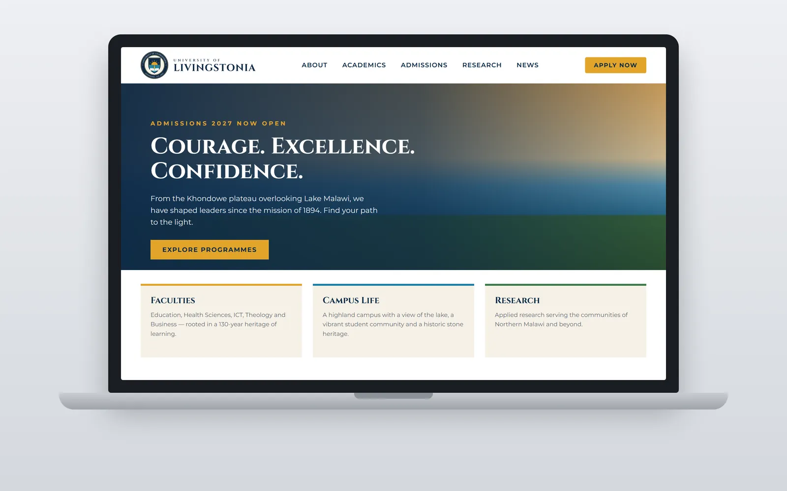
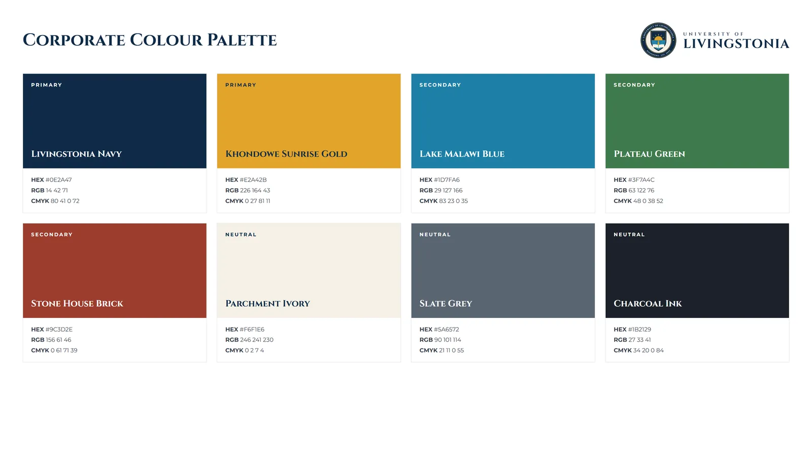

Proposed brand identity · Concept
University of Livingstonia: Path of Light Seal
A proposed logo and brand identity redesign for the University of Livingstonia. The concept is a round ceremonial seal: the Path of Light shield set in a navy ring carrying the university's full name, with Khondowe and the founding year at its foot.
The idea
A shield inside an official seal
At the centre is the Path of Light shield. The sun rises over Lake Malawi, seen from the Khondowe plateau, and its reflection forms a path from an open book up to the light: education as the road to enlightenment. The path and the horizon meet in a quiet cross, a nod to Livingstonia's Presbyterian mission heritage.
The seal sets that shield, unchanged, inside a navy ring lettered with the university's full name. It gives the university an official mark for certificates, gowns, plaques and ceremonies, and carries the motto "Courage · Excellence · Confidence" across stationery, signage and screens. At very small sizes, below 20 mm, the shield is used on its own so the ring lettering stays legible.
#0E2A47#E2A42B#1D7FA6#3F7A4C#9C3D2EThe system in use
From business cards to graduation




















Note on names: the names of people used across my projects, in mockups, demos and sample data (customers, students, staff and users), are made up or randomly generated. Any resemblance to real people is coincidental.